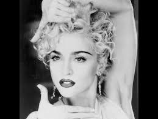
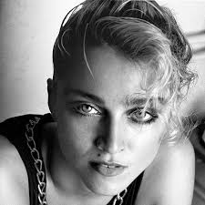

Biography
Madonna was born in Bay City, Michigan, on August 16, 1958 as an American singer, actress, dancer and movie star. Her mother died of breast cancer when she was only five which then brought her to be raised by her grandparents as a Roman Catholic. Madonna later went on to attend the University of Michigan, but then dropped out and moved to New York, with very limited resources. She got a job and in her spare time and learned modern dance. She temporarily joined a rock band The Breakfast Club and then tried to make a solo career. Her early attempts at singing gained impression with Sire Records, and she was given her first recording contract. In 1981, she went solo as a pop singer and became a sensation.  By 1991, she had achieved 21 Top 10 hits in the United States and sold more than 70 million albums. In January 2008, she was named the world's wealthiest female musician by Forbes magazine. Although she had many acheviments throughout her career, Madonna also had many accomplishments in her personal life. She became a mother in 1996, giving birth to Lourdes Maria Ciccone Leon, and then went on to adopt three children from Malawi, two twin girls and a young boy. This proves Madonna is a wonderful influence because she has created such an impact on women's society. She broke through with her music career, which allowed new beginnings and pathways for women to be encourage to become the first for many things to come.